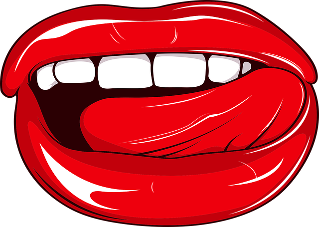

Sayings that you will often come across in Cologne:
Drink doch ene met!
Have a drink with us!
Do häs he jar nix zo kamelle!
You have no say here!
Küss de hück nit, küss de morje!
If you don't come today, you'll come tomorrow!
Dat jitt et för ene Appel un e Ei!
This is available for an apple and an egg (means it is cheap)
Dä fingk Saache, die hät noch keiner verlore!
They find things that no one has lost!
Continue
Sayings that you will often come across in Cologne:
Wat dä Boor nit kennt, dat friss hä nit!
What the farmer doesn’t know, he doesn’t eat!
Ovends laache, danze un springe, morjens de Botz net finge!
Don't miss a dance or a Kölsch in the evening, but then be absolutely
useless the next morning!
Mach et jot, ävver nit ze off!
Enjoy life, but don't overdo it too often!
Et hätt noch immer jot jejange!
In the end everything will be fine again!
Dä hät d'r Kopp nor zom Hoor puddele!
He only has his head for washing his hair!
Isch han disch jään!
I love you!
